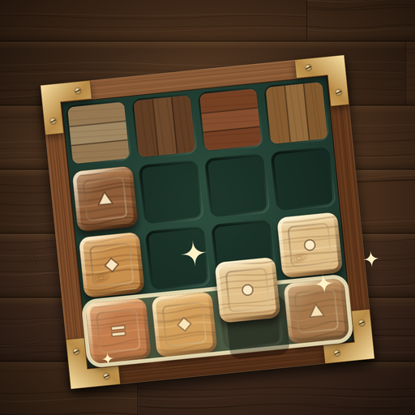

Plank ParlorEffective date: 14 November 2026
Plank Parlor is an HTML5 puzzle game published by Matheus da Silveira Mello, an individual developer based in Portugal. Place and rotate wooden pieces on a 10×10 inlay board in a warm workshop rendered with Canvas 2D. The game is available on third-party platforms such as CrazyGames and YouTube Playables, and as a local build.
- Rotate wooden pieces, clear rows and columns and craft a parquet of your own.
- Continue a saved run, build clear streaks, use three free undos per run and track your best score. There is no timer.
- Play a daily commission based on your device’s UTC date, or voluntarily share a challenge seed and target score (CrazyGames and local builds).
- Adjust music and sound effects, synthesized locally with Web Audio.
No game account, no analytics, no purchases and no ads requested by the game; ads are disabled.
Privacy. A small JSON save keeps your unfinished run, best score, daily commission record, parquet trophy and audio settings in browser local storage or the platform’s save service. A voluntary challenge link contains only a seed, board type and numeric score. The game never reads or writes the clipboard. See the privacy policy.
Platforms. Third-party platforms process data under their own policies. YouTube Playables also receives the saved integer personal-best score. Browser-local saves remain until you or your browser clear the game’s site data; platform saves follow the platform’s controls.
Support
Questions or bug reports: matheus.mello.developer@gmail.com. Please mention "Plank Parlor".